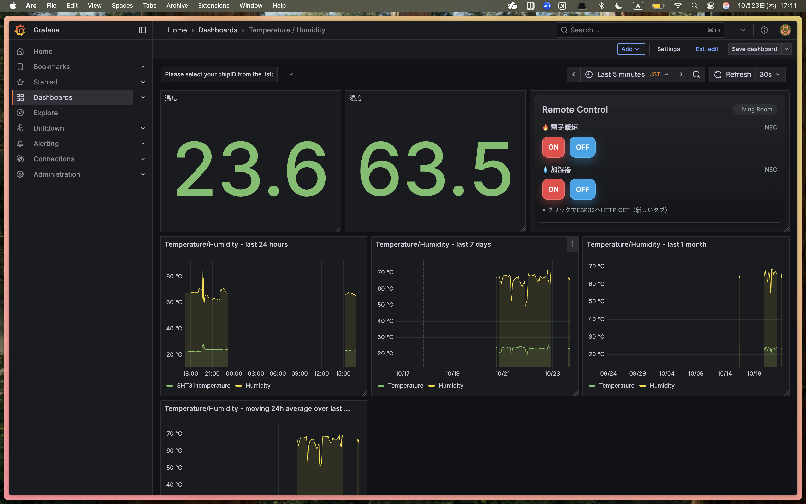
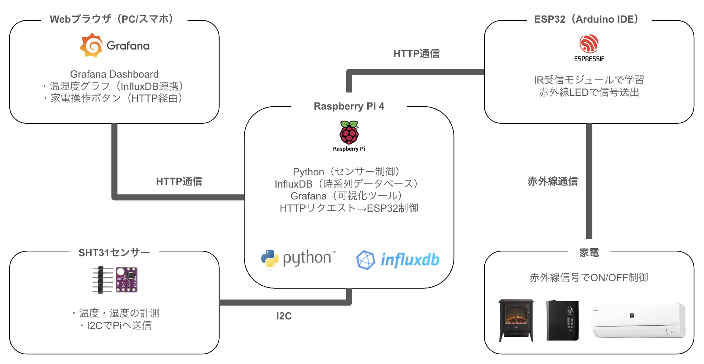

スマートホーム開発
電子暖炉と加湿器の自動制御
温湿度を計測し、可視化・自動制御するRaspberry Pi × ESP32ベースのスマートホームシステム。
単なる遠隔操作ではなく、部屋の環境データを元に最適な状態へ調整する予見的な制御ロジックに挑戦しました。
SmartHomeダッシュボード
Prototype｜実機構成

デモ動画
使用技術: Raspberry Pi / ESP32 / InfluxDB / Grafana / Python / Arduino
Architecture｜システム構成
- SHT31： 温湿度センサー（I2C通信）
- Raspberry Pi 4： Pythonスクリプトで制御・DB格納
- InfluxDB： 温湿度データを時系列で保存
- Grafana： データを可視化・操作UIを提供
- ESP32： HTTP経由で受信した信号を赤外線出力
- 家電： 電子暖炉・加湿器を制御
Data Flow｜データフロー
- ① SHT31 → Raspberry Pi： 温湿度データをI2C通信で定期取得。
- ② Raspberry Pi → InfluxDB： Pythonスクリプトでセンサー値をDBに記録。
- ③ InfluxDB → Grafana： 保存されたデータをリアルタイムでグラフ化。
- ④ Grafana → ESP32： HTTPリクエストを送信して家電制御信号を発行。
- ⑤ ESP32 → 家電： 赤外線LEDで暖炉・加湿器をON/OFF制御。
Implementation｜実装内容
センサー計測
Pythonの smbus2 でSHT31から値を取得し、influxdb-client 経由でInfluxDBに記録。
cronジョブで定期実行し、常時データを取得。
可視化
Grafanaでリアルタイムグラフ・数値表示・操作パネルを統合。
HTML＋CSSのみでシンプルでわかりやすいUIを実装。
家電制御
Arduino IDEでESP32を開発し、HTTP経由で受け取った指令を赤外線に変換。
家電リモコン信号をIR受信→送信モジュールで再現。
設定した温湿度の閾値で自動でON/OFF制御。
Design & Refinement｜特徴・工夫
- 温湿度の「見える化」と「操作」を1つのUIに集約
- ローカル完結構成により、プライバシー性と応答速度を両立
- ボタンやリモコンで遠隔で操作することなく、温湿度の閾値で家電を自動制御するような工夫
Outcomes & Learnings｜成果と学び
- IoTシステムの全工程（計測→保存→可視化→制御）を自力で構築できた
- ESP32・Raspberry Pi・InfluxDB・Grafanaの総合理解ができた
- 自分が家で過ごす上での適温/適湿がそれぞれどの値なのかを知ることができた。
今回は、IoT製品/スマートホームがどのようにして動いているのかを知りたいという欲求と、
リモコン操作をせず家をより心地よい空間にしたいと思ったことが今回の開発のきっかけです。
これまでエンジニアとしてやってきたこととは違う領域でしたが、
実際に触れられる機器やモジュールがあることで、何かを生み出したかのような
ワクワクと楽しさを感じることができました。
作業中以外も今回の開発をやりたいと思えるほど熱中できるものを見つけられたのは大きな成果だと思います。
まだまだ基礎的な部分の開発でもあるので、より高度な制御も引き続き学習していきます。
Next Steps｜今後考えている展開
- HTTP制御からMQTTへ拡張（双方向通信対応）
- Home Assistant（Alexa） / ESPHomeとの統合
- 温湿度トレンドから「快適度スコア」を算出・自動最適化